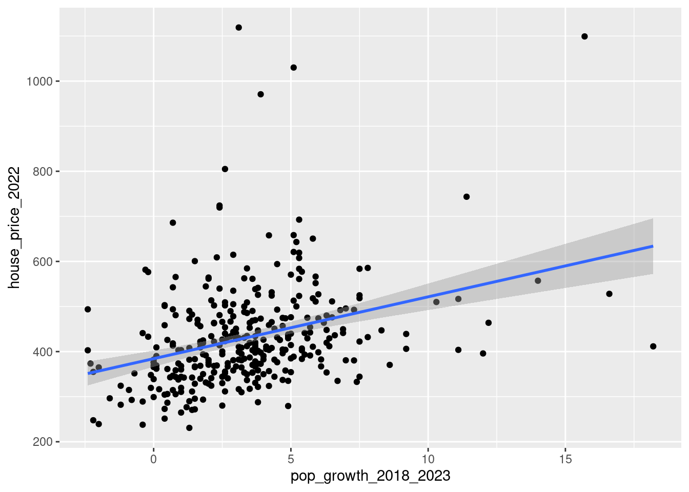
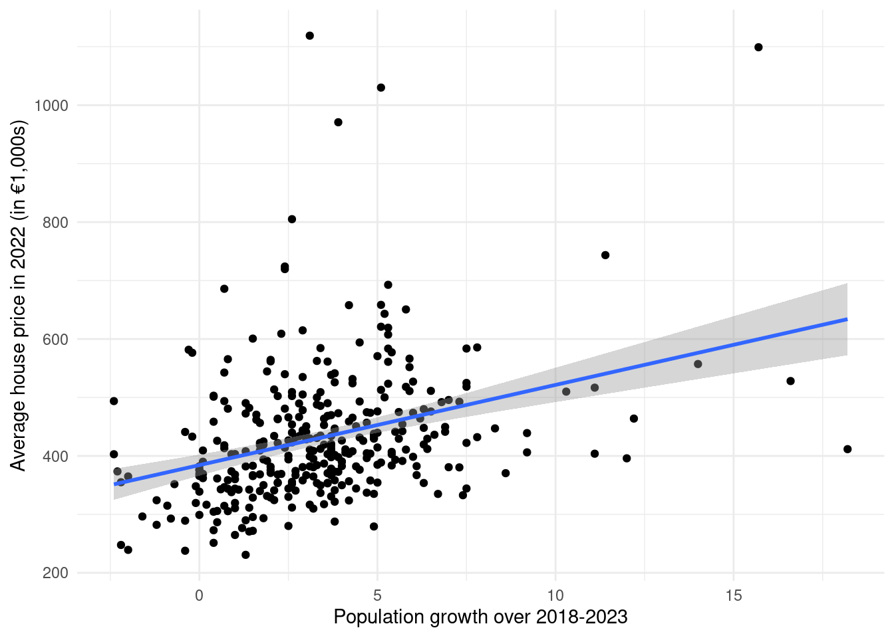

df1 <- read.csv("cpb-house-prices.csv", sep = ";", dec = ",")
names(df1) <- c("municipality", "house_price_2022", "house_price_2021")
df2 <- read.csv("cpb-pop-growth.csv")
names(df2) <- c("municipality", "pop_growth_2018_2023")Tutorial Exercises Week 7
Question 1
Download the two datasets:
Read in both datasets. When reading in the house price dataset you should use the following command:
read.csv("cpb-house-prices.csv", sep = ";", dec = ",")
This is because the dataset uses semicolons to separate the columns instead of commas, and uses commas for decimals.
Rename the 3 variables to: "municipality", "house_price_2022", "house_price_2021".
The 2nd dataset is can be read in with the read.csv() function without any special options. Rename the 2 variables in that dataset to: "municipality", "pop_growth_2018_2023".
Merge the two datasets together by the variable "municipality".
One municipality from the population growth dataset fails to merge with the house price dataset. Which municipality is this?
Solution
We read in the two datasets and rename the variables according to the instructions:
To see which observations from df2 fail to merge with df1, we can use the all.y = TRUE option in the merge() function, and see which values are NA:
test1 <- merge(df1, df2, by = "municipality", all.y = TRUE)
test1[is.na(test1$house_price_2022), ] municipality house_price_2022 house_price_2021 pop_growth_2018_2023
300 Voorne aan Zee NA NA 3.4Another way would be to see which municipalities in df2 are NOT contained somewhere in df1:
df2$municipality[!(df2$municipality %in% df1$municipality)][1] "Voorne aan Zee"Voorne aan Zee is a new municipality that merged from Brielle, Hellevoetsluis, and Westvoorne. The house price data is from before the merger, whereas the population growth data is from after. Therefore it failed to merge. This happens frequently when we merge on locations.
Question 2
How many municipalities from the house price dataset fail to merge with the population growth dataset?
Solution
To see which observations from df1 fail to merge with df2, we can use the all.x = TRUE option in the merge() function, and see which values are NA:
test2 <- merge(df1, df2, by = "municipality", all.x = TRUE)
test2[is.na(test2$pop_growth_2018_2023), ] municipality house_price_2022 house_price_2021 pop_growth_2018_2023
50 Brielle 406.1 375.3 NA
129 Hellevoetsluis 363.1 371.4 NA
313 Weesp 537.6 305.8 NA
322 Westvoorne 627.8 625.7 NAnrow(test2[is.na(test2$pop_growth_2018_2023), ])[1] 4We can see that Brielle, Hellevoetsluis, and Westvoorne didn’t merge, for the same reason as above. They merged into Voorne aan Zee so didn’t merge with it. In addition to these municipalities, Weesp merged with Amsterdam. Therefore this one also failed to merge. Because Amsterdam didn’t change its name, it still managed to merge.
Another way would be to see which municipalities in df1 are NOT contained somewhere in df2:
df1$municipality[!(df1$municipality %in% df2$municipality)][1] "Westvoorne" "Weesp" "Brielle" "Hellevoetsluis"length(df1$municipality[!(df1$municipality %in% df2$municipality)])[1] 4Although it’s not asked here and it’s outside the scope of what we will learn to do in this course, suppose we really wanted to avoid losing these observations when merging. What we could do is take the population-weighted average of the house prices in Brielle, Hellevoetsluis and Westvoorne in each year and create an observation for Voorne aan Zee in df1. We could then do the same for Weesp: we change the house prices for Amsterdam to be the population-weighted average of Weesp and Amsterdam.
Question 3
Create a scatter plot using ggplot of population growth on the horizontal axis and the house price in 2022 on the vertical axis.
Add the following layer to your plot to get a fitted line through the points:
geom_smooth(method = "lm")
Choose the answer below which best interprets what we can see in the plot.
- Municipalities with higher population growth on average have higher house prices.
- Municipalities with higher population growth on average have lower house prices.
Solution
We first merge the data, and then make the scatter plot with the added fitted line layer using the geom_smooth(method = "lm") command:
df <- merge(df1, df2, by = "municipality")
library(ggplot2)
ggplot(df, aes(pop_growth_2018_2023, house_price_2022)) +
geom_point() +
geom_smooth(method = "lm")`geom_smooth()` using formula = 'y ~ x'
If we wanted to customize the plot a little:
ggplot(df, aes(pop_growth_2018_2023, house_price_2022)) +
geom_point() +
geom_smooth(method = "lm") +
xlab("Population growth over 2018-2023") +
ylab("Average house price in 2022 (in €1,000s)") +
theme_minimal()`geom_smooth()` using formula = 'y ~ x'
You will learn a lot more about what is happening with the geom_smooth(method = "lm") command in Statistics 2. But essentially what is happening is R is trying to fit a straight line through that scatter plot points that fit the pattern as best as possible.
What we see is that where the population growth was high, also usually have higher house prices. Conversely, places where the population growth was low tend to have lower house prices. Therefore the correct answer option is “Municipalities with higher population growth on average have lower house prices.”
Question 4
Reshape the original house price dataset from wide format to long format using the municipality as the ID variable. How many rows does the long format dataset have?
Solution
To go from wide to long with the reshape2 package, we use the melt() function on the data, specifying the ID variable with id.vars:
library(reshape2)
df1_long <- melt(df1, id.vars = "municipality")
nrow(df1_long)[1] 690This is exactly 2 times the length of the original dataset, as there are 2 house prices for each municipality: one for 2021 and another for 2022.
Question 5
If you correctly reshaped the dataset from the previous question the first 4 rows should look like:
municipality variable value
1 Bloemendaal house_price_2022 1118.9
2 Blaricum house_price_2022 1099.1
3 Laren (NH.) house_price_2022 1030.1
4 Wassenaar house_price_2022 970.8Suppose the long format dataset is called df1_long. Which of the following commands will return the dataset back to its original format (apart from the order of the observations)?
dcast(df1_long, municipality ~ variable)dcast(df1_long, variable ~ municipality)dcast(df1_long, value ~ municipality)dcast(df1_long, municipality ~ value)
Solution
One way to answer this question would be to just try out each one and see which one gets the right output. But the correct approach is to put the ID variable before the ~ (the tilde) and the variable column after it. The dcast() function will then take the numbers from the value column by default.
df1_returned <- dcast(df1_long, municipality ~ variable)The two datasets will still be sorted differently, but we can check that both have the same summary statistics to check they are the same, as the order doesn’t affect the summary statistics:
summary(df1) municipality house_price_2022 house_price_2021
Length:345 Min. : 230.8 Min. : 200.5
Class :character 1st Qu.: 361.4 1st Qu.: 325.1
Mode :character Median : 411.2 Median : 371.3
Mean : 431.7 Mean : 388.0
3rd Qu.: 476.2 3rd Qu.: 424.6
Max. :1118.9 Max. :1067.3 summary(df1_returned) municipality house_price_2022 house_price_2021
Length:345 Min. : 230.8 Min. : 200.5
Class :character 1st Qu.: 361.4 1st Qu.: 325.1
Mode :character Median : 411.2 Median : 371.3
Mean : 431.7 Mean : 388.0
3rd Qu.: 476.2 3rd Qu.: 424.6
Max. :1118.9 Max. :1067.3 Question 6
Download the dataset municipality-province.csv.
This dataset contains two variables: the municipality and the province in which each municipality is located.
Read in the dataset and rename the variables to "municipality", "province".
Merge the municipality-province.csv dataset with your previously-merged house price and population growth dataset.
Calculate the average of the variable house_price_2022 by province.
Which province has the highest average?
Solution
We begin by reading in the new dataset and renaming the variables according to the instructions:
df3 <- read.csv("municipality-province.csv")
names(df3) <- c("municipality", "province")We then merge it with the previous merged data. I will overwrite the previous df with the merged one:
df <- merge(df, df3, by = "municipality")To get the average house price in 2022 by province, we can use the aggregate function:
tmp <- aggregate(house_price_2022 ~ province, data = df, FUN = mean)
tmp province house_price_2022
1 Drenthe 381.3083
2 Flevoland 388.5500
3 Fryslân 370.8889
4 Gelderland 435.2157
5 Groningen 296.5800
6 Limburg 342.4194
7 Noord-Brabant 442.7839
8 Noord-Holland 541.2523
9 Overijssel 376.3640
10 Utrecht 518.4808
11 Zeeland 338.1000
12 Zuid-Holland 443.6020From this we can see that Noord-Holland (North Holland) has the highest. But we can also find this by sorting the data decreasing by house price and returning the first province:
tmp[order(tmp$house_price_2022, decreasing = TRUE), ]$province[1][1] "Noord-Holland"